BEYOND RESEARCH / PHOTOGRAPHY
Photography
Moments around İstanbul, Ankara, and elsewhere. A small selection from behind the camera.

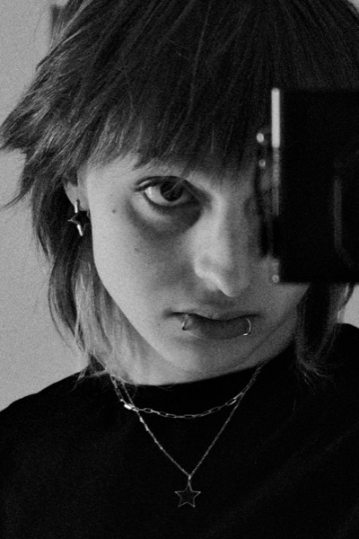
sima just a few days before removing her lip piercings. felt cool tbh.

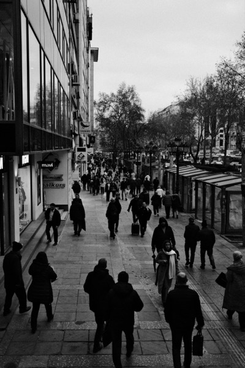
just a photo of some street of ankara

just a photo of some street of ankara

amca commuting using the terrible public transportation of ankara

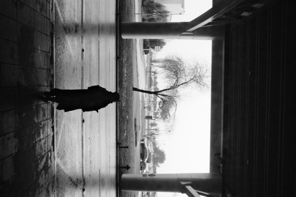
ankara is known as cold, depressing. when i stepped outside from the esenboga airport, this was the scene that was waiting for me. i guess what i have heard was pretty accurate

the lion does not concern herself with understanding matisse

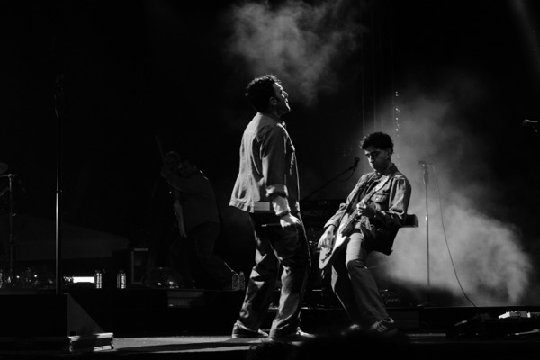
photo from offtown festival of sabanci university.

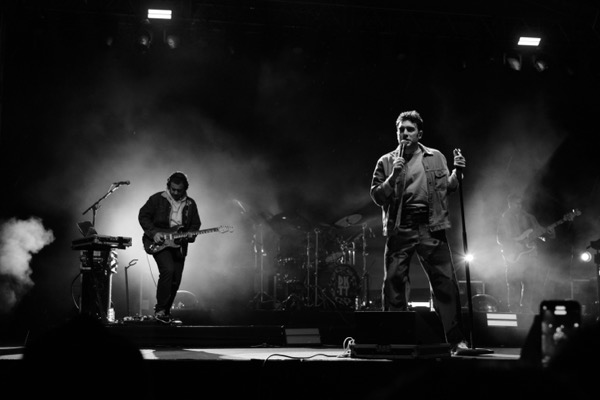
photo from offtown festival of sabanci university.

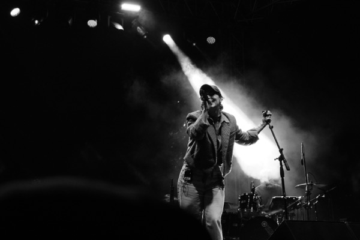
photo from offtown festival of sabanci university.

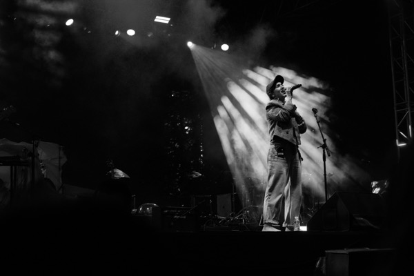
photo from offtown festival of sabanci university.

sabanci in winter is something else. listening to jeon jin hee is highly recommended

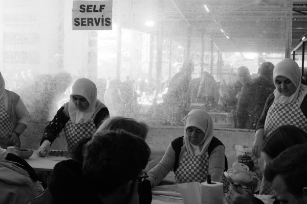
teyzeler means 'aunts' in turkish. and they were preparing a food. i don't know what. i wasn't interested.

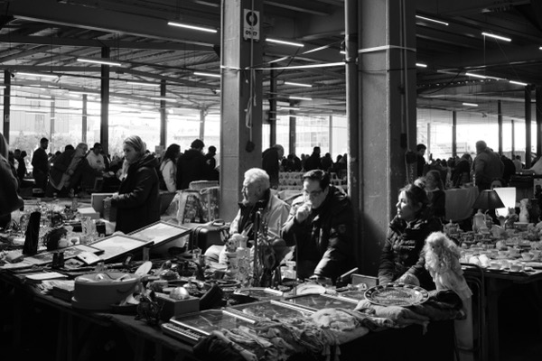
two guys in antique market. nothing more. maybe a cigarette?

museum of modern arts

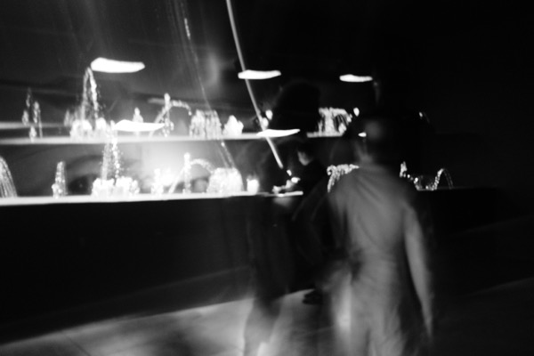
people in museum, they're always on move

a turkish man looking away in the ship

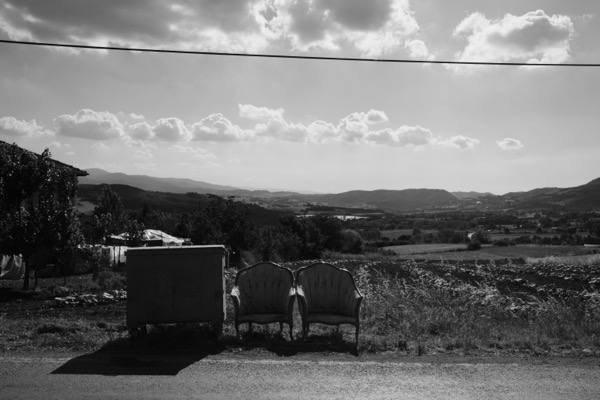
two chairs in middle of nowhere. idk why.